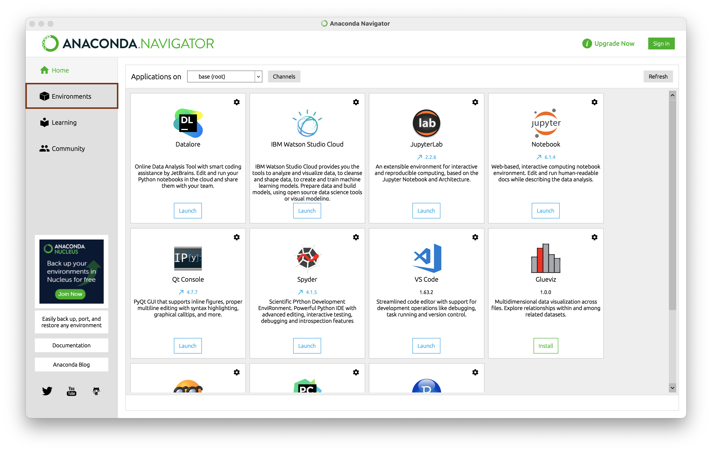

Anaconda
Contents
Anaconda#
Anaconda est une distribution libre et open source2 des langages de programmation Python et R appliqué au développement d’applications dédiées à la science des données et à l’apprentissage automatique (traitement de données à grande échelle, analyse prédictive, calcul scientifique), qui vise à simplifier la gestion des paquets et de déploiement3. Les versions de paquetages sont gérées par le système de gestion de paquets conda4. 1 (Source: Wikipdeia)
Introduction#
Dans ce stage/projet pour documenter les differents activié informatique du gymnase, nous utilison le package Jupyter-Book qui converti les pages Markdown (.md) dans les quelles on travail en format Html qui sera enresgistré et publié via Github.
Installation Jupyter-Book#
Logiquement nous allons besoin d’installler Anaconda d’abord mais il est normalement déjà installé sur les postes Gycham.
Il y a plusieurs maniers d’installer Jupyter-Book, depuis GUI2 de Anaconda Navigateur ou CLI3.
Note
Vous aller de toute façon avoir besoin de vos connaissances basiques sur les ligne de commandes pour utiliser Jupyter-Book même si on installe le package via la methode GUI.
GUI: Installation Jupyter-Book#
Depuis votre machine, ouvrez Anaconda navigateur. Ce nous intéresess est dans la barre de gauche, Environments (les environements).
{kind=link}
Quand vous cliquez sur “Environments” vous allez voir tout les environements disponibles, dans notre cas il y a seulement le “base” a disposition, nous allons donc créer un autre environement pour notre package Jupyter-Book.

Quand vous allez créer un nouvel environment, il vous demande de nommer votre environement et choisir une version de Python. Pour le nom nous allons mettre jupyter-book et pour la version vous pouvez choisir soit une version antérieur a la 3.8 ou toutes celles d’après. (j’ai actuellement la 3.10 et elle me semble assez stable).

Quand l’environement est créé, choisissez le. Ensuite:
Choisissez “not installed” pour afficher les packages qui ne sont pas installés
cherchez pour le package “jupyter-book”
Selectionnez le package “jupyter-book” dans les resultats
Appliques votre choix

Ensuite appliquez de nouveau les packages montrés dans la fenêtre suivante.

Voilà nous avons fini l’installation Jupyter-Book.

Nous pouvons maintenant passer à Comment Utiliser Jupyter-Book pour builder notre site.
CLI: Installation Jupyter-Book#
L’installation Anaconda sera la même que l’étap précédent.
Pour installer Jupyter-Book ouvrez le terminal de votre machine. Puis tapez “conda” pour voir si c’est la commande est reconnue. Si l’installation de Anaconda à été correctement fait vous verrez les messages suivant dans le terminal.

Ensuite nous allons créer l’environment qui contiendra notre package Jupyter-Book. La commande pour créer un environment. (nous allons nommer notre environment “jupyter-book”):
conda create -name jupyter-book

Qunad le terminal vous demande de continuer avec l’installation ou pas, tapez “y” pour dire yes.
On peut aussi choisir quelle version python à installer pour cette environment avec la commande suivannte:
conda create -name jupyter-book python=3.9
Maintenant on passe à l’installation package jupyter-book dans cet environnement. Avant d’installer le package jupyter-book il faut d’abord activer l’environment que nous venons de créer:
conda activate jupyter-book

Et on voit dans l’image que notre environnement qui était sur (base) est basculer sur jupyter-book. 4. Enfin nous passon à l’installation jupyter-book. Le package jupyter-book peut être installer depuis conda-forge, donc si vous voulez faire cette installation proprement, suivez en ordre:
conda config --add channels conda-forge
conda config --set channel_priority strict
conda install jupyter-book

Ensuite conda teste les différentes sources pour collecter des packages et les installer. Quand la collecte est fini conda vous demande de valider l’installation, tappez “y” pour valider et normalement c’est tout!

Utilisation Jupyter-Book#
Pour utiliser jupyter-book vous allez utiliser la ligne de commande, c’est comme ça que ça marche, même si vous avez installer jupyter-book avec le GUI de Anaconda.
Jupyter-book suit un schemas pour créer le site, on ne peut pas lancer le build depuis n’importe où.

Dans l’image ci-dessus, on voit le dossier documentation-stage-meta (qui est le dossier qu’on clone depuis Github), les emplacements des fichiers et les sous-dossiers. Le dossier qui nous concerne le plus pour lancer jupyter-book est src. Ce dossier contient les documents que vous allez modifiez pour le site et les photos. De coup c’est depuis ce dossier que vous pouvez lancer jupyter-book et créer le site.
En utilisant comand cd4 vous pouvez naviguez entre les dossiers. Quand vous êtes bien à l’emplacement dossier source, vous pouvez lancer cette commande:
jupyter-book build .

Quand il a bien généré le site, il vous donne un lien vers le site en local, vous pouvez le copiez dans votre navigateur web pour voir les modifications que vous avez effectué dans vos documentations.